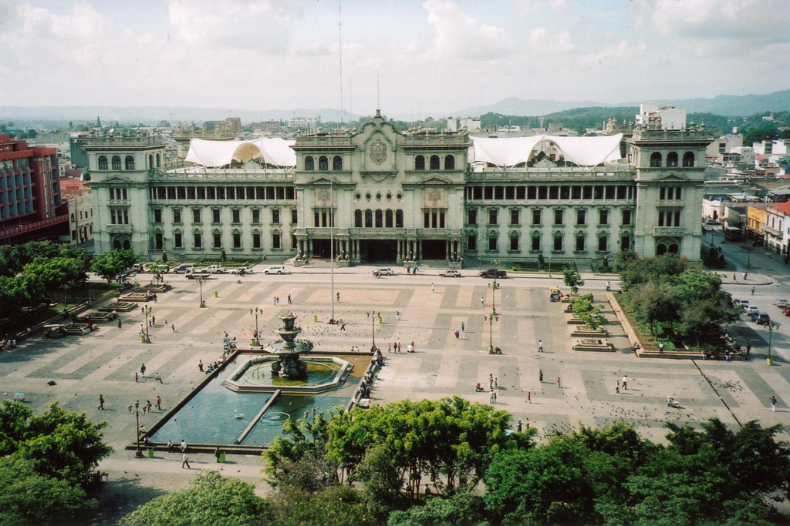
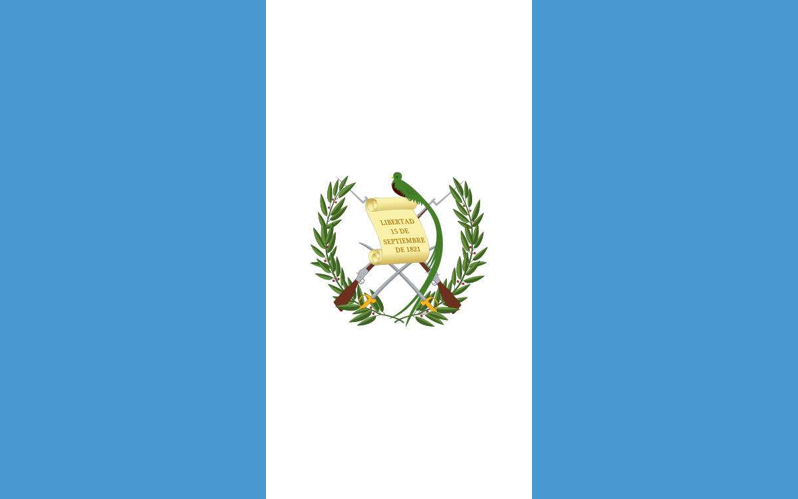
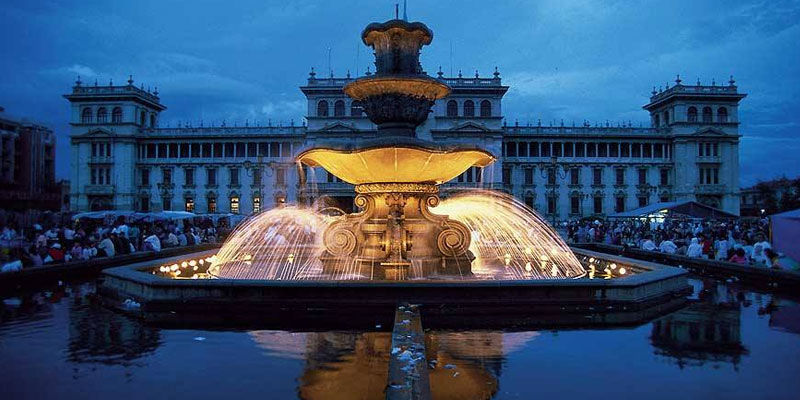

|
Carlos Interiano/Panfleto
Hola, Primero queria aclarar que no quiero
me gusta, y algunas experiencias. Spoiler: Faltas ortograficas hay y no son pocas Así que no me enrollo mas y dentro info... |
 |  |
Datos: |
Lo que yo veo: |
|
|---|---|---|
|
Comenzando por su ubicacion, esta en el departamento,
de Guatemala en Guatemala en el parque central zona 1
frente al Palacio Nacional. Datos: MuniGuate |
 |
Iniciando seria por que cuando eramos pequeños |